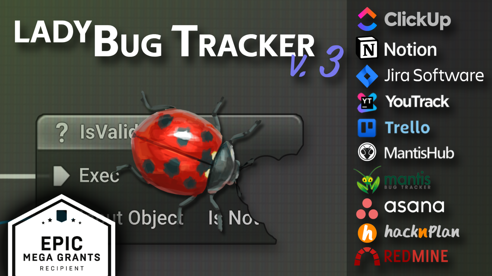

LadyBug Tracker is a plugin that integrates bug tracker systems with Unreal Engine. This plugin makes your work much more efficient and convenient. You do not have to switch all the time between the Unreal Engine editor and a bug tracker page in the web browser. With LadyBug Tracker, you can do these tasks:
The LadyBug Tracker plugin does not store any data. The plugin sends all reports directly to the databases of the integrated services: Jira, YouTrack, Mantis, Trello, Asana, HacknPlan, Redmine, ClickUp and Notion. It uses the API of each service. Only you have access to this data. The plugin never sends it to a different place. Also, the plugin does not collect data for statistics or diagnostics.
LadyBug Tracker is designed to support many bug tracker systems.
Do you need a different integration? Tell me.
| YouTrack | Trello | Jira Software | Jira Server | Mantis | MantisHub | Asana | HacknPlan | Redmine | ClickUp | Notion | |
|---|---|---|---|---|---|---|---|---|---|---|---|
| View issues | Yes | Yes | Yes | Yes | Yes | Yes | Yes | Yes | Yes | Yes | Yes |
| Edit issues | Yes | Yes | Yes | Yes | Yes | Yes | Yes | Yes | Yes | Yes | Yes |
| Report issues | Yes | Yes | Yes | Yes | Yes | Yes | Yes | Yes | Yes | Yes | Yes |
| Custom fields | Yes | Yes1 | Yes | Yes | Yes | Yes | Yes1 | No2 | Yes | Yes1 | Yes |
| Sort by columns | Yes | Yes | Yes | Yes | Yes | Yes | Yes | Yes | Yes | Yes | Yes |
| Filter issues | Yes | Yes | Yes | Yes | Yes | Yes | Yes | Yes | Yes | Yes | Yes |
| 3D Markers | Yes | Yes | Yes | Yes | Yes | Yes | Yes | Yes | Yes | Yes | Yes |
| View attachments | Yes | Yes | Yes | Yes | Yes | Yes | Yes | Yes | Yes | Yes | Yes |
| Add attachments | Yes | Yes | Yes | Yes | Yes | Yes | Yes | Yes | Yes | Yes | Yes |
| Delete attachments | Yes | Yes | Yes | Yes | Yes | Yes | Yes | Yes | Yes | No2 | Yes |
| View comments | Yes | Yes | Yes | Yes | Yes | Yes | Yes | Yes | Yes | Yes | Yes |
| Add comment | Yes | Yes | Yes | Yes | Yes | Yes | Yes | Yes | Yes | Yes | Yes |
| Delete comment | Yes | Yes | Yes | Yes | Yes | Yes | Yes | Yes | Yes | Yes | No2 |
| View checklists (subtasks) | No2 | Yes | Yes | Yes | Yes | Yes | Yes | Yes | No | Yes | Yes |
| Edit checklists (subtasks) | No2 | Yes | Yes | Yes | Yes | Yes | Yes | Yes | No | Yes | Yes |
| Create project | No2 | Yes | No | No | Yes | Yes | Yes | Yes | No | Yes | No2 |
| View history | No | No | No | No | Yes | Yes | No | No | No | No | No |
| Free version users | 10 | 15 | 10 | - | unlimited | 0 | 10 | unlimited | unlimited | unlimited | unlimited4 |
| Free version storage, total / per file | 30 GB / 500 MB | unlimited / 10 MB | 2 GB / 2GB | - | unlimited / unlimited | 0 / 0 | unlimited / 25MB | 500 MB / 5 MB | unlimited / unlimited | 1 GB / 100 MB | unlimited / 5 MB |
| Free version projects | unlimited | 10 | unlimited | - | unlimited | 0 | unlimited | unlimited | unlimited | unlimited lists (max 5 Spaces) | unlimited |
1 Available in the paid version of the service
2 The service does not have this feature
3 Not implemented yet
4 When a workspace has more than one member, Notion sets a limit of 1,000 blocks
To enable the plugin, do these steps:

LadyBug Tracker is a tab in Unreal Editor. To open the tab, use the Window menu.

The LadyBug Tracker user interface has these parts:


After you download all the bugs from the server, this list (2) shows all the issues. Use the filter (1) to show only the issues that you are interested in. The filter of the Issue List lets you search your issues with an advanced syntax, as in the Content Browser. This syntax supports complex search queries. It also lets you search for key-value pairs from the issue properties. For more information, see the Advanced Search Syntax page.
Examples:
| Filter Phrase | Description |
|---|---|
| hello | issues that contain the word 'hello' in the summary, description or additional information field |
| ...llo | issues with a summary, description or additional information that ends with 'llo' |
| updated >= 2017 | updated in 2017 or later |
| updated = 201712 | updated in December 2017 |
| updated = 20171224 | updated on 24 December 2017 |
| updated < 20171224.13 | updated before 1 pm on 24 December 2017 |
| status != resolved | all issues that are not resolved |
| severity > minor | severity higher than minor |
| assignedto = john_smith | assigned to john smith |
| submitted = 2018 & status = new | new issues submitted in 2018 |
The Pending List contains bugs that are reported but not submitted yet. You complete the details of these bugs, then submit them to the server (see Reporting Bugs). You can filter the pending issues, as in the Issues List.

The Details panel shows all the available information about the selected bug.

The property list contains all the most important information about the selected issue.
Standard properties are available by default in Mantis.

Fields that the user defines. The plugin shows custom fields only as text. The server checks the values when you submit the issue.

The Attachments section shows a list of attachments. For PNG, BMP and JPG images, the plugin can show thumbnails.

The Comments section shows all the notes of the issue. You can also add new notes here.

The history of all the activities on the issue.
| Note: At this time, the history does not show readable values for enum types, for example category or priority. It shows the numeric value. |
|---|

The toolbar shows a different set of controls in each mode.


The Output panel collects the log output of all the plugin operations. If a problem occurs, look for the cause here first.

The Message Log tab also shows the logs from the Output panel, in the Bug Tracker section. To make the logs more detailed, use the “Debug” section of the project settings.


This window can be different for each provider that you select.
You can edit the LadyBug Tracker settings in the Project Settings tab, in the Plugins section. The settings are in the /Config/DefaultBugTracker.ini file. Your team can share this file.


The plugin keeps the user settings in the /Saved/Config/WindowsEditor/BugTrackerPerProjectUserSettings.ini file. The user settings contain, for example, the preferences, the login and the password.
When you report a bug in the editor or in the game, the plugin automatically saves the level name. It also saves the location and orientation of the camera. The Issues List marks each bug that has this information, in the column with this symbol:

| Attention! This feature is available only if you add the Camera and Level fields to the custom fields. |
|---|
An issue keeps location information. With this information, you can go very quickly to the level, at the location of the issue. To do this, click this button on the Details Panel Toolbar:

The level viewport can show the markers of all the issues for the level that is open now. To enable this feature, select this button in the Toolbar:

If you select a marker in the level viewport, the Details panel opens its issue. If you double-click a marker, the viewport goes to the location of the marker.

You can change the labels of the 3D markers here:

The most powerful feature of this plugin is how you report issues. It is very convenient, and you can customize it.
The plugin sends all reported bugs to the pending list. Thus you can describe an issue and submit it to the server at any time. For each new bug, the plugin makes a subdirectory in the ../Saved/Bugs/Pending/ directory. The plugin automatically adds all the files in this subdirectory to the bug as attachments.
You can report an issue in two ways: from the Toolbar, or with a keyboard shortcut. To use a keyboard shortcut, first assign the command to a key. The bugs that you report in the editor automatically contain the log and the screenshots of all the open editor windows.
You can report a bug in the game in three ways: from the Toolbar, from the console, or from a Blueprint (see Triggering Reporting Bugs). To report a bug from the console, do these steps:
The bugs that you report from the game have a screenshot and the log as attachments.
Each crash also appears on the pending list. Thus it is very easy to report a crash. A bug from a crash contains the log from the game and the minidump. It also contains the other files that the crash reporting tool of Unreal Engine saved.
Before you submit an issue, you can edit all the screenshots in an image editor that you set, for example Paint.

Use the Upload check box to select the files to attach.
LadyBug Tracker lets the shipping game send feedback from users, with attachments (logs, saves, screenshots).
User feedback uses different authentication data from the editor. For bug reports from users, it is good practice to use a separate account that you make only for this purpose. For security, give this account the minimum permissions.
Each node in these steps also has a synchronous variant. Blueprint API shows both variants.
To make the QA team more efficient, the plugin can do some of the tedious work automatically.
Profiles let you override the default values of fields for each report mode. To override these default values, open the LadyBug Tracker Project Settings.

Issue Constructor is a Blueprint class that can change any parameter of an issue. For example, you can add information that helps to reproduce the issue. This can be the name of the current quest or the skills of the player character.
To make your own Issue Constructor, make a Blueprint that inherits from IssueConstructor. In this Blueprint, override the Construct Issue function. The plugin calls Construct Issue for all bugs, immediately after each report.
In the example below, the constructor adds information to all the issues that you report in the game. It adds the current level, the game time and some steps to reproduce.

To set your Issue Constructor, select an IssueConstructor class in the combo box in Project Settings.

You can also make issues automatically when a specified condition occurs in the game. For example, the game can make an issue when the player falls under the terrain.

With this method, you can add more information to the report, for example the player position or the objects that collide.
To report a bug, call the Create Issue node. This node only makes an Issue object. You can change this object later.

When the Issue object is ready, call the Report Issue Data node. The reported issue goes to the Pending List.

You can also call Report Issue. This node makes and reports an issue with the summary that you give.

All the nodes that the plugin adds are in the Bug Tracker category. Each node that communicates with the server has two variants:
| Node | Asynchronous variant | What it does |
|---|---|---|
| Create Issue | - | Makes an empty issue. You complete it, then give it to Report Issue Data. |
| Report Issue Data | - | Sends an issue from Create Issue to the pending list. |
| Report Issue | - | Makes and reports an issue with a given summary in one step. |
| Create Feedback | Create Feedback Async | Makes the feedback object that your form completes. |
| Send Feedback | Send Feedback Async | Submits the feedback and returns the Issue Id. |
| Send Attachment | Send Attachment Async | Uploads a file from disk to that issue. |
| Send Attachment From Memory | Send Attachment From Memory Async | Uploads a byte array to that issue. It does not need a file on disk. |
| Send Log Attachment | Send Log Attachment Async | Uploads the current game log to that issue. |
| Get Field Values | Get Field Values Async | Returns the possible values of a field. Use them to fill your own UI. |
| Get Issues | Get Issues Async | Returns the issues of the project. The game can then show them in its own list. |
| Get Bug Tracker Name | - | Returns the name of the configured integration. |
Some nodes ask for Username and Password or Token. For these, use the separate account from Reporting User Feedback. Never use your own account. If Override Project Name is empty, the node uses the project from Project Settings.


The asynchronous nodes do the same as Example 4, but they do not need custom events. Each of them has its own On Success and On Failure execution pins. Thus the full graph is one chain.